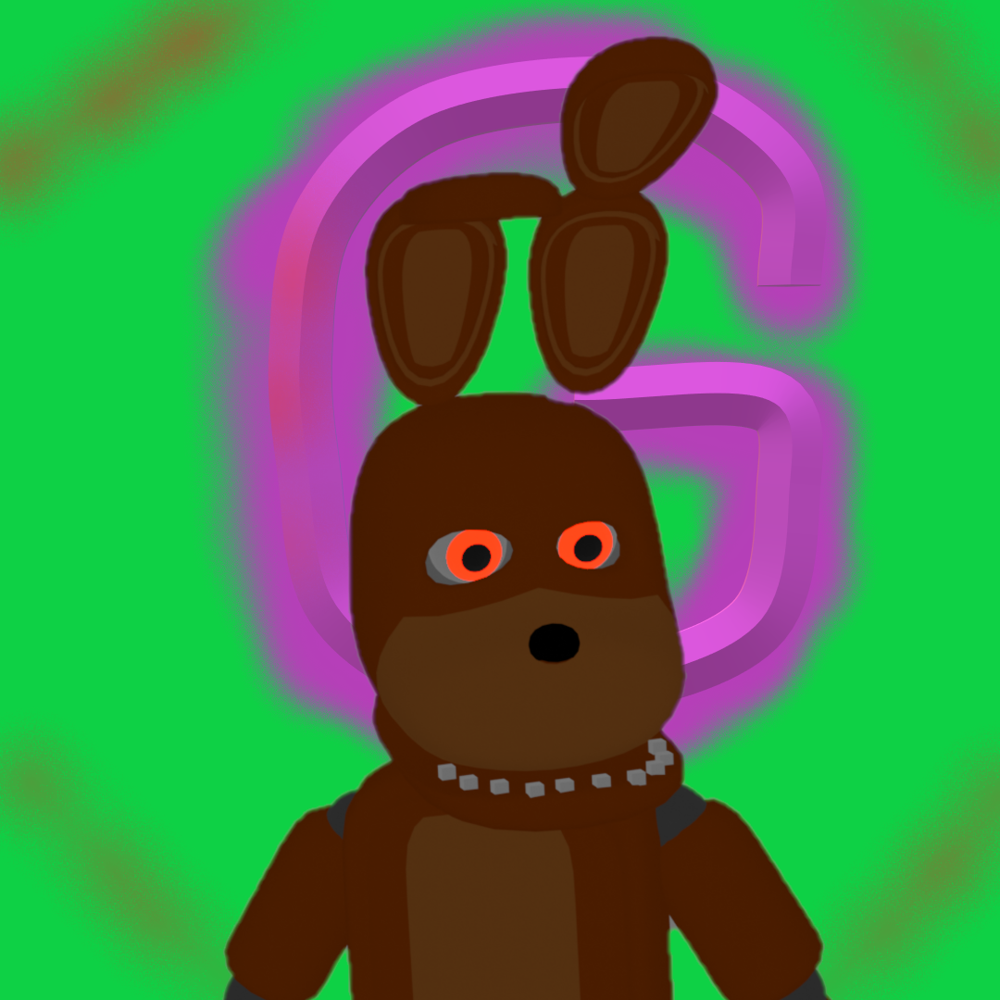

¡La página sigue en construcción!
Home
Log In
Contactar
Bienvenido a la pagina Web de los videojuegos en los que trabajó/a by GaLgEsp
Actualmente hay 0 juego(s) descargable(s) en esta página y 1 demo(s) descargable(s)
¡Puedes ver los jue gos en desarrollo aquí!
Los Frities
Armas de GaLgEsp
The Legend
Juegos con Demo
The Legend
Juegos completos
Los Frities
Eso es todo por ahora

Sobre "by GaLgEsp"
by GaLgEsp es un desarrollador de videojuegos indie con 4 projectos activos, 3 juegos y 1 servidor de Minecraft Java
Información del servidor de
Minecraft Java
:
Es un servidor publico survival con eventos en el que cualquiera puede entrar, solo requiere estar en el
Discord
Información de los juegos:
Los juegos seran algunos gratuitos y pocos de pago, los juegos son de diferentes tematicas, siendo el más desarrollado
The Legend
con su Demo jugable